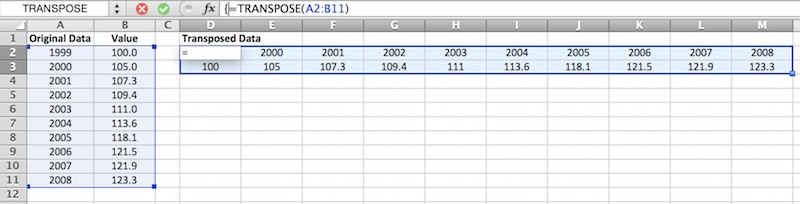

Get in touch!


Excel's array functions probably rival pivot tables for the title of most misunderstood and underutilized features available to Excel users. That is a shame as they are powerful tools that can be used to simply and elegantly address some of the key problems that users will regularly encounter. Although there is an almost endless list of ways in which array functions can be used, below I discuss three scenarios that I regularly encountered in which array functions can be useful.
One of the simplest and most useful ways to utilize array functions is to ensure the consistency of formulae in large spreadsheets. There are numerous infamous examples where simple formula errors have undermined the credibility of analyses done in Excel (including a recent popular economics paper) and although this method (or any method for that matter) can't prevent all errors, it can help to minimize the places where things can go wrong.
This method can be applied to any situation where you have a column or row in which you need to apply the same formula repeatedly (anywhere you would normally drag the formula across or down). To use an array function in this situation, select the full range of cells you need the formula to apply to and then create the formula in the same way you would normally, except replacing the single cell references with references to the range of cells instead. When the formula is ready, press Control + Shift + Enter to confirm it [1]. A simple example summing two columns is shown below:
Using this method ensures that the formulae are consistent and also that individual formula in the column or row cannot be modified. You can test how this works yourself - once you have created an array formula (or opened the example file at the bottom of this page) try to delete or modify one of the individual cell formulas. You should be presented with an error like the following:
This error prevents any modifications that users may inadvertently make, including the deletion of a row or column in the dataset.
Occasionally the need will arise to transpose data (convert data that runs across a row into data that runs down a column, or vice versa). In my experience, these cases typically involve time series data running across a spreadsheet being transposed to run down the spreadsheet to make it easier to view.
The method here is to highlight the cells where you want the transposed results to display and enter the function "=TRANSPOSE( ", then highlight the values to be transposed. Note, that if the size of the ranges selected do not match (e.g. the number of columns to be transposed is greater than the number of rows in the range selected to display the results) the extra values will be dropped, or in the reverse case, the extra cells in the result set will be display as errors. An example is provided below:
The big advantage of doing this (as opposed to simply copying and pasting the set with the transpose option selected) is that it maintains a live connection. Any updates in the original dataset will be reflected in the transposed dataset.
One of the primary reasons I started learning about array functions was this exact problem - how do I do a SUMIF with two conditions? This may seem like an esoteric requirement but, as the datasets you are working with become more complex, the need to summarize the data by multiple criteria becomes increasingly useful. Looking at an example, let's imagine we have a small dataset of campaign contributions that contains the name, gender, city and the amount contributed for 10 individuals. This data is shown below:
Now let's imagine you want to identify the total contributions from all females in Boston. Broadly speaking, there are three ways you can do this:
Often, the actual dataset is too big for method 1 (any dataset with more than 10 entries probably falls into this category), and a pivot table can be overkill when you only need to derive one value. In these cases, method 3 can be the simplest option.
To create our SUMIF with two criteria, we create a formula that actually looks like a SUMIF in some ways. Essentially we create two nested IF statements inside a SUM function. Our final formula is going to be as follows (if you are recreating this, don't forget to use Control + Shift + Enter):
The formula works by creating an array of TRUEs and FALSEs based on the criteria specified in the IF statements (i.e. that the value in the gender column = "F" and the value in the City column = "Boston"). If both conditions are met, the formula captures the corresponding value in the specified range (the contributions column in this case); otherwise, the FALSE value (zero) is captured. Once there is an array of values and zeroes, the SUM function will sum up all the values to provide the answer.
Finally, this structure can also be used for a range of functions including:
Still confused? Please feel free to download this example file: 
[1] This combination confirms to Excel that the formula is an array formula. If you simply press enter, the formula will not work as expected. Completed array formulas will display in the formula bar surrounded by {}, but you do not manually type these characters in.
[2] Pivot tables are very useful for a range of purposes, but will be covered in a separate blog entry